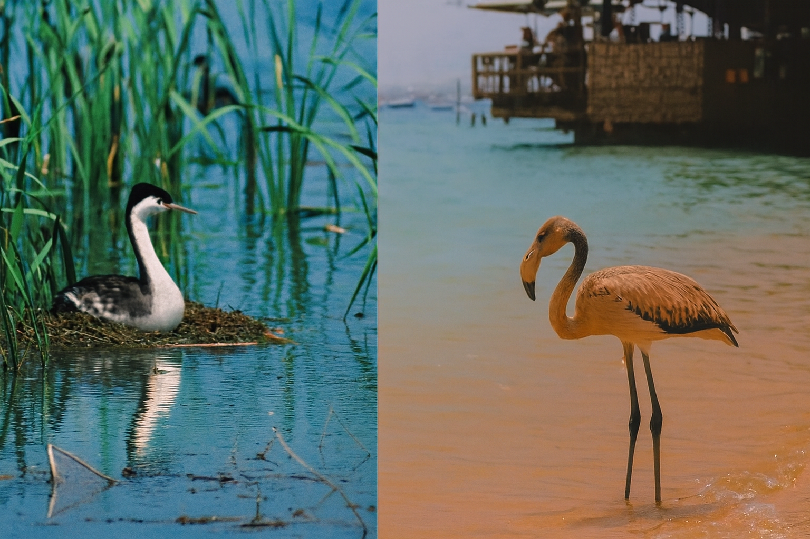

| Evolution in the News - November 2001 |
| by Do-While Jones |
| In what can charitably be called a contentious debate, the two most strident groups of these paleontologists sometimes--okay, almost always--reach interpretations of the data that are poles apart. They defend their analyses with fundamentalist fervor and fling darts at the opinions of scientists who hold a different view. When these guys get together the feathers can really fly. 2 |
There is more truth in that paragraph than Perkins probably meant to convey. They reach interpretations that are poles apart because they are just interpretations, not proven facts. "Interpretations" is just another word for "opinions." What is often stated as fact is really just an opinion, which "sometimes--okay, almost always" is opposite to some other equally qualified scientist's opinion. The reason why the scientists "defend their analyses with fundamentalist fervor" is that the opinions are closer to religion than science. Their analyses are really opinions that are strongly connected with the scientists' personal beliefs about the origin and meaning of life. That makes it hard for them to be objective.
This is illustrated by a tangent in Perkins' "Ticklish Debate" article. The tangent is the real reason for including this Evolution in the News column in the same issue as the Whale Tale Two essay. In that essay we noted that whale evolution has been controversial because the DNA analysis does not agree with the traditional fossil interpretation. This is commonly the case. Perkins has provided us with yet another example of this disagreement. Perkins says,
| The members of one camp of paleontologists rely on the fossil record and cladistics, the science of determining the evolutionary relationships between organisms by analyzing their shared characteristics. By looking at traits such as general body structure, the number and shape of bones, and the presence of body coverings such as feathers, these scientists can construct family trees. 3 |
But Perkins doesn't think this is a reliable way to construct a family tree.
| Another argument against cladistics based solely on fossils: Looks can be deceiving, as genetic analysis of living animals attests (see box). This kind of disconnect between physical appearances and genetic relationships helps fan the debate over how feathers evolved. 4 |
Perkins believes looks are deceiving because looks say one thing and DNA says another. How does he know that the DNA is right, and the looks are wrong? The answer, of course, is that looks are deceiving when things don't look like he thinks they should. Looks really don't matter, unless they confirm what he already believes to be true. If the DNA analysis didn't agree with what he believed, no doubt he would say the DNA analysis is deceiving. Many other scientists might say that any analysis that says flamingos and grebes are closely related must be incorrect, and therefore deceiving.
Perkins argued against physical appearance as an indication of common ancestry with an example placed in a prominent box in his article. Here is the text from that box. (The box also contained two pictures. One of a western grebe, and the other of a flamingo, showing that the two birds are about as different as two birds can be.)
 |
|---|
|
Family trees: Looks versus genes Consider that a family tree based on DNA similarities can be much different from one drawn according to body characteristics preserved in fossils (SN: 11/25/00, p. 346). Markers in the DNA of modern animals, for example, link African creatures as diverse as elephants, elephant shrews, and aardvarks to a common ancestor (SN: 1/6/01, p.4). Similar DNA analyses suggest that the flamingo's closest relatives could be grebes--medium-size diving birds with stocky bodies, slender necks, and small heads. These and other skeletal characteristics have led most evolutionary biologists to group grebes with loons, another diving bird, says S. Blair Hedges of Pennsylvania State University in State College. But two completely different types of genetic testing indicate that the leggy flamingo and the squatty grebe may in fact be long-lost cousins. The fossil record for flamingos goes back at least 50 million years, and none of their body characteristics suggest that they're related to grebes," says Hedges, who reported the DNA tree in the July 7 Proceedings of the Royal Society of London B. That DNA links flamingos and grebes "was a big surprise," he says. 5 |
Given the number of terrible bird and feather puns in that article, we were expecting him to say, "That DNA links flamingos and grebes is loony." He probably didn't say that because he believes the DNA analysis rather than physical appearance, so the physical appearance, not the DNA evidence, is loony to him.
We are just asking evolutionists to be consistent. We will not allow evolutionists to claim that physical similarity is reliable evidence whenever it supports their argument, and then claim that physical similarity is irrelevant whenever it contradicts their argument. Either physical appearance provides reliable evidence of common ancestry or it doesn't.
Of course, there should not be an argument between molecular biologists and paleontologists to begin with. If evolution were true, then a family tree based on DNA similarities should NOT be much different from one drawn according to body characteristics. But, if creatures were independently created, and physical similarities in appearance are simply accidents of design, or fanciful whims of the designer, then one would not expect the DNA analysis to agree with relationships based on physical appearance.
| Quick links to | |
|---|---|
| Science Against Evolution Home Page |
Back issues of Disclosure (our newsletter) |
| Web Site of the Month |
Topical Index |
Footnotes:
1
Perkins, Science News, Vol. 160, August 18, 2001, "A Ticklish Debate: How might the feather have evolved?", page 106 https://www.sciencenews.org/article/ticklish-debate
(Ev)
2
ibid.
3
ibid.
4
ibid. page 107
5
ibid.